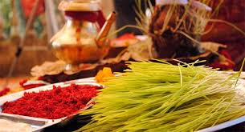
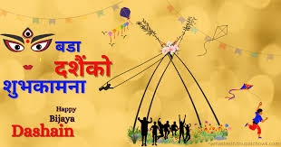

Dashain
दशैँ
वडा दशैँ असत्यमाथि सत्यको विजय र पारिवारिक पुनर्मिलनको प्रतीकका रूपमा मनाइने नेपालीहरूको सबैभन्दा ठूलो सांस्कृतिक पर्व हो।
- अवधि: कुल १५ दिन (घटस्थापनादेखि कोजाग्रत पूर्णिमासम्म)
- मुख्य दिन: विजयादशमी (दशौँ दिन)
- मुख्य विशेषता: टीका-जमरा, मान्यजनको आशीर्वाद, लिङ्गे पिङ र घर फर्किने उल्लास
Visuals of Dashain


Dashain Music
पौराणिक मान्यता र कथा
दशैँ असत्यमाथि सत्यको र अधर्ममाथि धर्मको विजयको प्रतीक हो। पौराणिक मान्यता अनुसार दैत्य महिषासुरको अत्याचारबाट संसारलाई मुक्ति दिलाउन देवी दुर्गाले ९ दिनसम्म घोर युद्ध गरी दशौँ दिन (विजयादशमी) मा उसको वध गर्नुभएको थियो। साथै, यसै दिन भगवान् श्रीरामले अन्यायी रावणमाथि विजय हासिल गर्नुभएको विश्वास पनि गरिन्छ।
सांस्कृतिक तथा सामाजिक महत्त्व
दशैँ केवल पूजापाठ मात्र नभई नेपालीहरूको पारिवारिक पुनर्मिलन र कृषि संस्कृतिको ठूलो उत्सव हो। घटस्थापनामा उमारिने जमराले हाम्रो माटोसँगको सम्बन्धलाई दर्शाउँछ। यस पर्वमा टाढा-टाढा रहेका परिवारका सदस्यहरू घर फर्किन्छन् र मान्यजनको हातबाट रातो टीका र जमरा थापेर सुख, शान्ति र समृद्धिको आशीर्वाद लिन्छन्।
कति दिन र कसरी मनाइन्छ?
दशैँ कुल १५ दिन (घटस्थापनादेखि कोजाग्रत पूर्णिमासम्म) मनाइन्छ। मुख्य उत्सव पहिलो १० दिनसम्म हुन्छ, जसलाई नवरात्र भनिन्छ। घर-घरमा सरसफाइ गर्ने, नयाँ लुगा लगाउने, लिङ्गे पिङ हाल्ने र टाढा रहेका परिवारका सदस्यहरू घर फर्किएर रमाइलो गर्ने परम्परा छ।
दशैँका मुख्य दिनहरू र गतिविधिहरू
- घटस्थापना (पहिलो दिन): पूजाकोठामा पूजा गरी पूजाको भाँडोमा जौ छरेर जमरा उमारिन्छ।
- फूलपाती (सातौँ दिन): घर-घरमा नवपत्रिका (फूलपाती) भित्र्याइन्छ। हनुमानढोका र विभिन्न शक्तिपीठहरूमा विशेष हर्षोल्लासका साथ फूलपाती भित्र्याउने चलन छ।
- महाअष्टमी र महानवमी (आठौँ र नवौँ दिन): देवी दुर्गाको विशेष पूजा-आराधना गरिन्छ। हातहतियार, गाडी र औजारहरूको पूजा (बलिसहित/बलिबिना) गरिन्छ।
- विजयादशमी (दशौँ दिन): दशैँको सबैभन्दा मुख्य दिन! मान्यजनको हातबाट रातो टीका, जमरा र दक्षिणा थापेर आशीर्वाद लिइन्छ। यो क्रम पूर्णिमासम्म चल्छ।
- कोजाग्रत पूर्णिमा (१५औँ दिन): धनकी देवी लक्ष्मीको पूजा गरी रातभर जाग्राम बसेपछि दशैँको औपचारिक समापन हुन्छ।
विभिन्न समुदायमा दशैँ मनाउने परम्परा
१. खस-आर्य (क्षेत्री, बाहुन आदि)
घटस्थापनादेखि नवमीसम्म नवदुर्गाको पूजा गरिन्छ। विजयादशमीमा मान्यजनबाट रातो टीका र पहेँलो जमरा लगाएर आशीर्वाद लिइन्छ, जुन कोजाग्रत पूर्णिमासम्म चल्छ।
२. नेवार समुदाय (मोहनी नखः)
दशैँलाई "मोहनी नखः" भनिन्छ। रातो टीकाको साटो कालो टीका (मोहनी सिन्हाः) र कोका पहिरिइन्छ। यसमा तलेजु भवानीको तान्त्रिक पूजा, पायः (खड्ग जात्रा) र समय्बजी खाने परम्परा हुन्छ।
३. जनजाति तथा तराई/मधेस समुदाय
- जनजाति (मगर, गुरुङ, राई, लिम्बू आदि): कतिपय क्षेत्रमा रातो टीका लगाइन्छ भने कतिपय ठाउँमा दही-चामलको सेतो टीका र जमरा लगाउने मौलिक परम्परा छ।
- तराई/मधेस: "दशहरा" को रूपमा ९ दिनसम्म भव्य दुर्गा पूजाको मण्डप बनाएर मेला लगाइन्छ। दशमीका दिन रावण दहन र मूर्ति विसर्जन गरिन्छ।
Dashain's Most Beautiful Aspect
"दशैँको सबैभन्दा सुन्दर पक्ष भनेकै 'पुनर्मिलन' हो। नीलो आकाश, बाटाभरि घर फर्किनेहरूको खुसी, गाउँमा ठडिएका लिङ्गे पिङ, र मान्यजनको हातबाट निधारमा थापिने टीका-जमरा र आशीर्वादले हरेक नेपालीको मन जोड्ने काम गर्छ।"